7 - Problèmes d’estimation du modèle Reg-ARIMA
Désaisonnaliser une série temporelle
Questions de positionnement
Quelles sont les hypothèses sur les résidus du modèle regARIMA et sont-elles importantes ?
Avoir plus de données permet-il d’améliorer l’estimation du modèle regARIMA ?
Quelle est la longueur optimale pour l’estimation d’un modèle ?
Problèmes liés à la qualité des résidus
Les hypothèses sur les résidus du modèle regARIMA
Les hypothèses sur les résidus
Les estimations du modèle regARIMA sont consistantes (convergent et sans biais) et efficaces (de variance minimale), si les résidus \(\varepsilon_t\) sont :
- décorrélés : \(\forall t\ne t'\::\:\cov{\varepsilon_t,\varepsilon_{t'}}=0\) (autocorrélés sinon)
- homoscédastiques : \(\forall t, t'\::\:\V{\varepsilon_t}=\V{\varepsilon_{t'}}\) (hétéroscédastiques sinon)
- distribuées selon une loi normale
Conséquences des problèmes sur les résidus
Sources des problèmes de spécification des résidus
L’autocorrélation des résidus peut provenir :
- d’erreurs de mesure : si les données sont interpolées toujours à la même date, un biais systématique peut être observé
- problème de variable omise : il manque une variable explicative importante
- mauvaise spécification : par exemple dans le cas d’une équation non linéaire mais polynomiale
- effet de l’habitude : biais systématique du fait de l’optimisme
- d’un lissage artificiel des données trimestrielles sur données annuelles
L’autocorrélation peut souvent être corrigé en augmentant l’ordre AR mais elle peut aussi provenir de la présence de certains points atypiques (LS, SO)
Les points atypiques affectent l’hétéroscédasticité (AO, TC) et la non-normalité
Exemple sur une série de l’IPI
Exemple (1/4)
Un modèle ARIMA(0,1,1)(0,0,0) est-il plausible ?
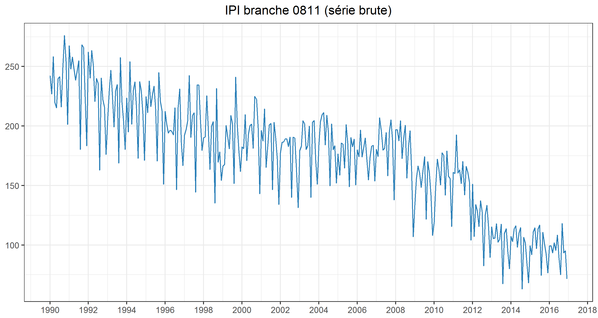
Exemple (2/4)
Que peut-on dire sur les régresseurs JO ?
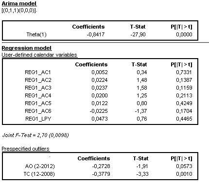
Exemple (3/4)
Avec un modèle bien spécifié :
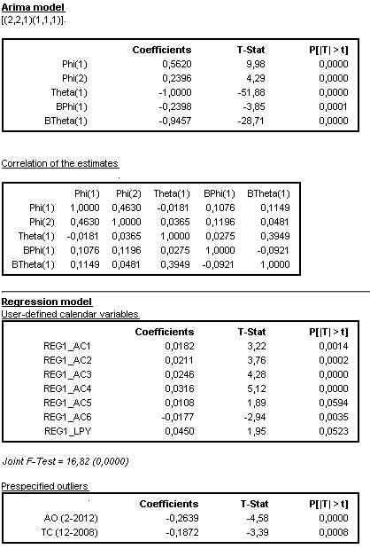
Exemple (4/4)
Quel impact sur ma série désaisonnalisée ?
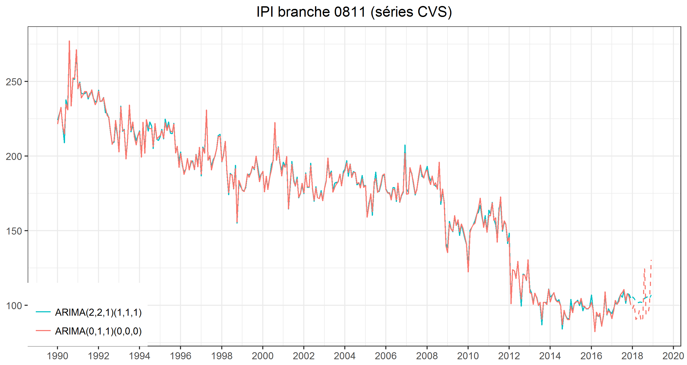
Modèle regARIMA et séries longues
Hypothèse de stabilité des coefficients
Hypothèse de stabilité du modèle regARIMA
Le modèle regARIMA est un modèle de régression linéaire. Il suppose :
que les coefficients sont stables dans le temps
que la structure des résidus (modèle ARIMA) est constante dans le temps
Est-ce plausible ? Quelle est la durée nécessaire pour avoir une estimation stable ?
Étudions les estimations des régresseurs JO et la stabilité de la décision de CJO
Exemples
Ici estimation du leap year relativement stable…
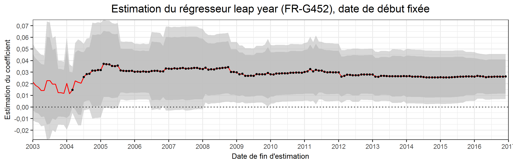
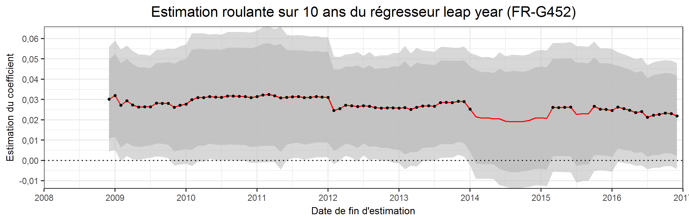
… Mais pas le régresseur mercredi
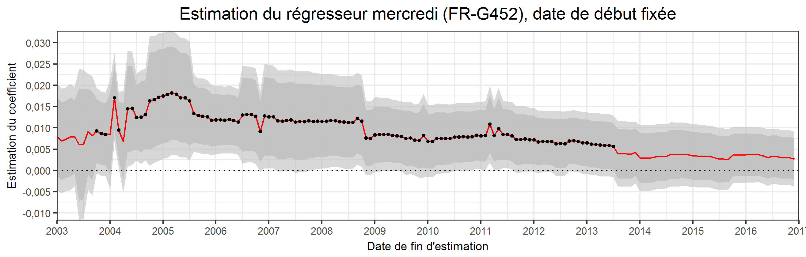
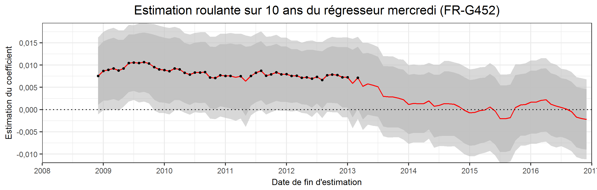
Estimations du LY pas toujours stable
Estimations du LY toujours non significatives avec estimations roulantes
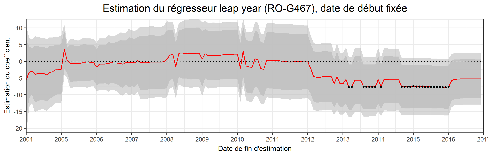
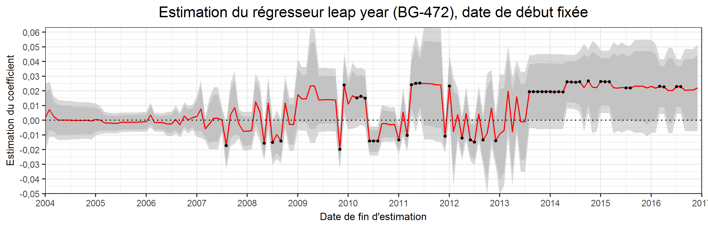
Cas compliqué (1/2) : EL G473
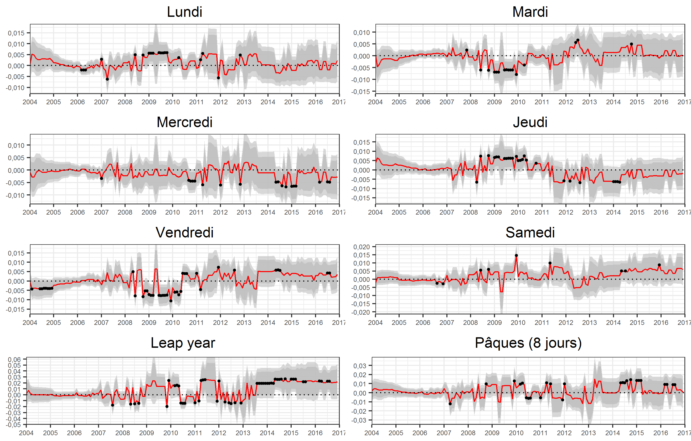
Cas compliqué (2/2) : estimations roulantes
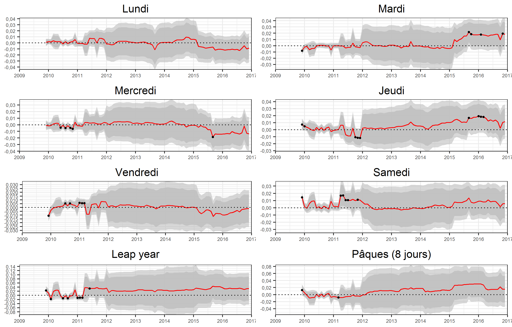
Conclusion
Les essentiels
une bonne spécification des résidus est importante pour interpréter le modèle regARIMA
résidus autocorrélés \(\implies\) hétéroscédasticité \(\implies\) non normalité
attention aux séries longues : l’hypothèse de stabilité du modèle est généralement fausse pour les séries de plus de 20 ans
attention aux séries courtes : les estimations sont généralement moins précisent (plus grande variance des estimateurs) et peuvent être fortement révisées